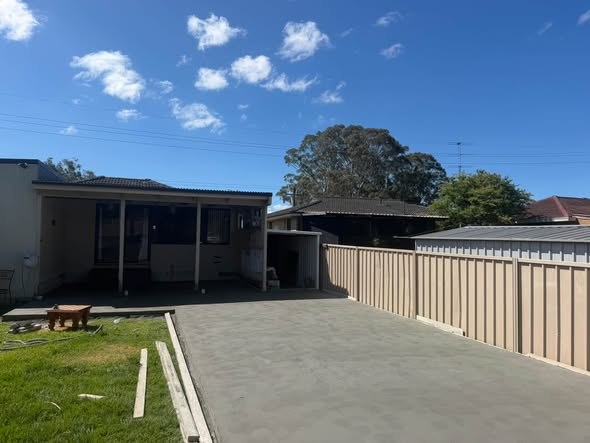
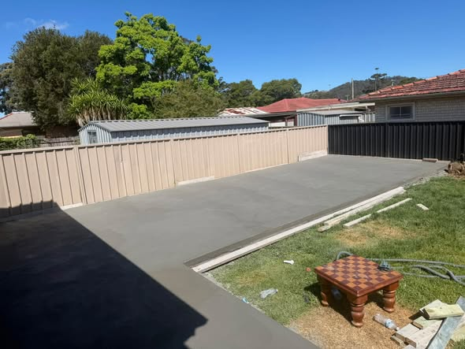
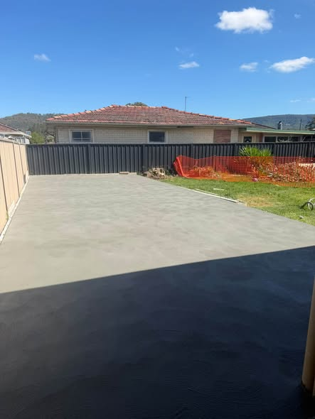
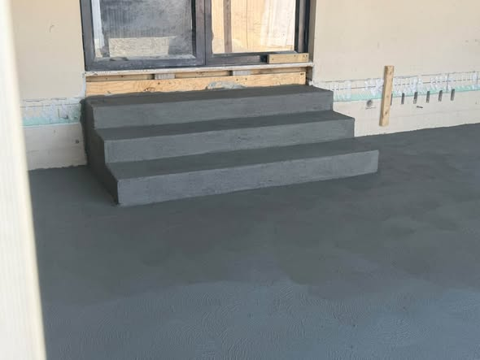
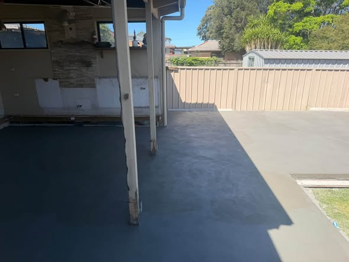

Concretor — Shellharbour & Wollongong
Coastal Concreting Illawarra pours and finishes driveways, house & shed slabs, paths and council-approved crossovers for homes across the Illawarra — fully licensed and insured.

From a single house slab to a full driveway and council crossover — formed, poured and finished to last.
New concrete driveways and council-approved crossovers, formed and poured to fall away from the house.
Slabs for homes, sheds, garages and extensions — set out, levelled and finished flat and true.
Side paths, garden paths and access walkways poured and edged clean.
Backyard and alfresco slabs finished ready for your entertaining area or undercover space.
Concrete steps, ramps and landings built to suit the doorway, the levels and the access.
Footings, edge beams and formwork for new builds, extensions and structures.
A straight-forward, tidy job — from site check to a clean finish.
We look at levels, drainage and access, then give you a firm written quote.
Everything is set out square, formed and steeled before a single barrow goes down.
Concrete poured and screeded to the right fall, then finished to your chosen surface.
We control the cure, cut the joints and leave the site clean and swept.
A few recent jobs — driveways, house slabs, backyard pours and concrete steps across the Illawarra.




Tell us about the job — driveway, slab, path or crossover — and we'll come back with a firm price.
Fully licensed and insured, and an approved concretor for Shellharbour and Wollongong council crossovers. 100% recommended by clients who have had a driveway, slab or path poured.